ИИ-инструмент
для создания заметок
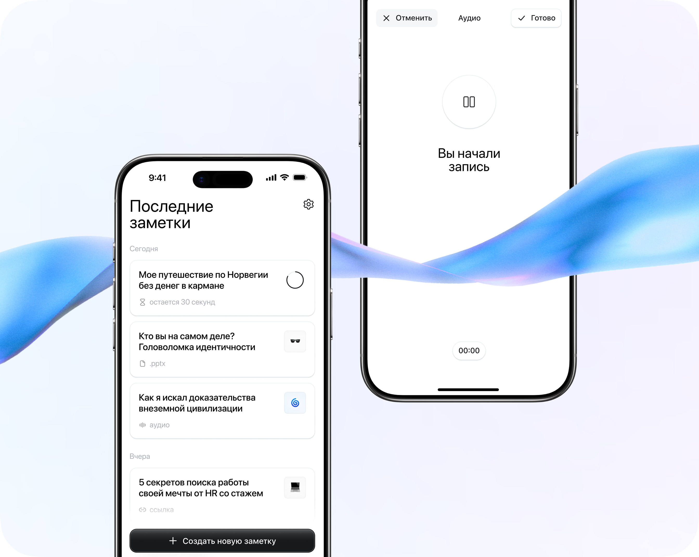
О проекте
NoteOn — мобильное ИИ-приложение в сфере продуктивность / edtech, которое помогает пользователям быстро преобразовывать длинный контент — видео, статьи, лекции и аудио — в краткие, структурированные и понятные конспекты.
Моя роль и команда
Я работал в роли продуктового дизайнера в продуктовой команде из 3 человек: продуктовый менеджер, разработчик и я.
Работал в тесной связке с ПМ на этапе проведения исследований и формирования гипотез, определения пользовательских сценариев, а также с разработчиком — для проверки технической реализуемости решений и подготовки макетов к разработке.
Моя зона ответственности включала полный цикл продуктового дизайна: проведение пользовательских исследований, формирование JTBD, конкурентный анализ, проектирование пользовательских сценариев, создание интерактивных прототипов, визуальный дизайн и моушн-дизайн для улучшения восприятия взаимодействий и повышения качества пользовательского опыта.
Контекст и проблема
Продукт решает проблему информационной перегрузки: пользователи ежедневно потребляют большое количество контента, но не успевают его осмысливать и сохранять ключевые идеи.
NoteOn сокращает этот процесс, автоматизируя извлечение главного и превращая информацию в удобный для повторного использования формат. Основной фокус продукта — ускорение обучения, упрощение работы с знаниями и снижение когнитивной нагрузки при потреблении информации.
- студенты, которым нужно быстро разбирать лекции, видео и учебные материалы
- работники сферы ИТ, кто часто бывает на рабочих встречах с долгими обсуждениями, много работает с документами
- продуктивные люди, которые используют приложение для саморазвития, обучения и личной эффективности
Исследование
На старте было важно понять, как люди сейчас работают с информацией и почему существующие решения не всегда закрывают задачу.
Проблема оказалась шире простого создания заметки. Пользователи и так сохраняют много материалов: сохраняют вкладки, делают скриншоты, отправляют ссылки себе в Telegram, пишут заметки от руки, создают документы в Google Docs. Но сохранение не означает, что информация становится полезной. Часто к ней потом не возвращаются, потому что материал слишком длинный, неструктурированный или его попросту сложно отыскать.
На этапе дискавери команда сфокусировалась на трёх вопросах:
- В каких ситуациях пользователям нужно быстро обработать информацию?
- Какие инструменты они уже используют вместо специализированного приложения?
- Что должно произойти в первом опыте, чтобы пользователь понял ценность NoteOn?
Исследование
Для исследования был использован JTBD-подход. Команде было важно понять конкретные ситуации: когда у пользователя появляется материал, что он пытается с ним сделать и что мешает получить результат быстро.
Основной JTBD сформулировался так:
Когда у меня появляется важная информация в любом формате, я хочу быстро превратить её в понятный конспект, чтобы не тратить время на ручную обработку и использовать материал дальше.
Дополнительные JTBD по аудиториям:
| Аудитория | Job story | Проблема | Решение |
|---|---|---|---|
| Студенты | Когда я смотрю длинную лекцию или YouTube-видео по учёбе, я хочу быстро выделить ключевые мысли, чтобы не пересматривать всё заново перед экзаменом или семинаром. | Студенты часто сохраняют видео «на потом», но не возвращаются к ним из-за их длительности. Студентам нужен короткий материал для повторения. | Сделать саммари коротким и понятным. Добавить ключевые моменты по ходу материала. Квизы и флеш-карты дадут мотивацию возвращаться к заметкам для повторения. |
| Когда я читаю PDF с учебным материалом, я хочу быстро понять структуру и основные идеи, чтобы решить, что читать внимательно, а что можно пропустить. | PDF часто воспринимается как тяжёлый формат: длинный текст, много страниц, сложно быстро понять, где главное. | Добавить загрузку PDF и генерацию заметки из документа. | |
| Работники сферы ИТ | Когда я нахожусь на рабочем созвоне, я хочу быть включённым в обсуждение, а не параллельно писать заметки, чтобы не пропустить важные решения и договорённости. | Участники встреч часто выбирают между вниманием к разговору и фиксацией деталей. После встречи остаются обрывочные бессвязные заметки. | Развить отдельный сценарий — заметки рабочих встреч. |
| Когда в созвоне участвует несколько человек, я хочу понимать, кто что сказал и насколько активно участвовал, чтобы потом точнее восстановить контекст встречи. | В рабочих обсуждениях важно не только «что решили», но и кто был инициатором идеи, кто задавал вопросы, а кто почти не участвовал. | Добавить распознавание собеседников и статистику участия: кто сколько говорил или молчал в дискуссии. | |
| Когда мне присылают запись встречи или видеофайл, я хочу получить краткий итог без просмотра, чтобы быстро понять, нужно ли мне вникать в детали. | Часто пользователь получает уже готовый файл и хочет быстро извлечь из него смысл. | Поддержать загрузку аудио- и видеофайлов. | |
| Когда у меня есть таблица с результатами опроса, интервью или выгрузкой данных, я хочу быстро понять основные паттерны, чтобы не разбирать файл вручную. | Для части пользователей информация приходит в таблицах: результаты опросов, списки фидбека, выгрузки из CRM, контент-планы. | Это могла бы решать загрузка Excel-файлов. | |
| Продуктивные люди | Когда я сохраняю полезное видео, подкаст или статью для саморазвития, я хочу быстро забрать главную мысль, чтобы не копить материалы, к которым я всё равно не вернусь. | Пользователи часто собирают полезный контент в Telegram, вкладках браузера и других местах, но потом этот материал никак не используется, так как чувствуют перегруз из-за сложности материалов. | Добавить загрузку видео из YouTube-ссылок. Сделать хранение заметок удобным. |
| Все сегменты | Когда я получаю сгенерированный ИИ конспект, я хочу иметь возможность проверить исходный текст, чтобы доверять результату и не бояться, что важная мысль потерялась. | Пользователи не готовы доверять ИИ на 100%. | Транскрибация как обязательный слой заметки. Добавить поиск по ключевым словам и редактирование. |
| Когда я уже получил краткий конспект, я хочу быстро отправить его другому человеку, чтобы не пересказывать всё самому. | Пользователь часто хочет поделиться результатом. | Добавить возможность делиться через отдельную веб-страницу, которая повторяет лейаут заметки. Получатель видит конспект без установки приложения. | |
| Когда у меня накапливается много заметок, я хочу разложить их по темам, чтобы быстро возвращаться к нужным материалам. | На старте достаточно простого списка, но при регулярном использовании библиотека быстро растёт. | В более поздней версии добавить папки на главном экране. | |
| Когда мне нужно использовать заметку вне приложения, я хочу скачать её в удобном формате, чтобы отправить, сохранить или приложить к другим материалам. | Не все сценарии находятся внутри приложения. Иногда конспект нужно отправить в чат, приложить к документу или использовать для учёбы. | Добавить экспортирование в PDF как способ вывести заметку из приложения и сделать её самостоятельным артефактом. |
Стало видно, что у пользователей повторяется один и тот же путь: они сталкиваются с материалом, пытаются быстро понять главное, хотят доверять результату и использовать его дальше. Поэтому первая версия продукта была сфокусирована на базовой ценности: создать заметку с краткими ключевыми поинтами, сохранить её и вернуться к ней позже. Остальные фичи появлялись уже как продолжение найденных job stories.
Конкурентный анализ
Конкурентный анализ был частью discovery. Я сравнивал не только прямых конкурентов, но и привычные способы, которыми пользователи уже закрывают похожую задачу.
Я разделил конкурентов на три группы:
Прямые конкуренты — ИИ-инструменты для конспектирования учебных лекций или рабочих встреч.
Вторичные конкуренты — Notion, Obsidian, Evernote, Apple Notes.
Они конкурируют за хранение и организацию информации.
Непрямые конкуренты — скриншоты, Google Docs, конспекты от руки, вкладки в браузере, Saved Messages в Telegram.
Они важны, потому что часто именно с ними пользователь сравнивает новый продукт по скорости и привычности.
Чтобы конкурентный анализ помог в проектировании, я смотрел на путь пользователя в связке со сценариями из JTBD:
- как быстро можно сохранить материал
- какие форматы поддерживаются
- что пользователь получает на выходе
- можно ли проверить результат
- можно ли вернуться к заметке позже
- можно ли использовать результат вне приложения
| Группа | Ценность | Ограничения |
|---|---|---|
| Прямые конкуренты — приложения для создания заметок с ИИ | Транскрибация, конспектирование рабочих встреч, работа с учебными материалами. | Часто сильны только в одном сценарии. Базовый ИИ-функционал сам по себе не создаёт сильную дифференциацию. |
| Вторичные конкуренты — инструменты для заметок и хранения информации | Долгосрочное хранение контента, организация знаний. | Не всегда обеспечивают высокую скорость сохранения. Ключевые смыслы выделяет пользователь. |
| Непрямые конкуренты | Выигрывают за счёт скорости и привычности. | Нет адекватной работы со знаниями, к ним сложно возвращаться. Информация хранится в неорганизованном виде. |
Конкурентный анализ показал, какие ожидания у пользователя уже сформированы за счёт работы с другими инструментами.
Прямые конкуренты задали базовые ожидания к категории: пользователь ждёт, что приложение для заметок с функциями ИИ сможет записать, расшифровать и сократить материал.
Вторичные конкуренты показали, что заметка должна иметь жизнь после генерации — если её нельзя отредактировать или использовать в другом контексте, она быстро превращается в ещё один ненужный сохранённый файл.
Непрямые конкуренты показали главный вызов в плане удобства пользовательского опыта: привычные способы сохранения информации очень быстрые. Сделать скриншот или переслать сообщение самому себе занимает пару секунд. Поэтому создание заметки в NoteOn должно было быть быстрым, последовательным и понятным.
NoteOn должен быть быстрее и легче, чем ручное конспектирование, приносить большую пользу в сравнении с обычным сохранением ссылки или скриншота и быть легче в использовании, чем сложные инструменты для ведения заметок и организации информации.
CJM
После JTBD и конкурентного анализа я собрал CJM вокруг основного пути: пользователь сталкивается с материалом и хочет быстро превратить его в полезную заметку. CJM нужен, чтобы увидеть, где именно в пути пользователь сталкивается с трением и какие моменты критичны для первого ощущения ценности.
| Этап | Контекст | Ожидания | Трения | Что учесть |
|---|---|---|---|---|
| Пользователь хочет сохранить материал | Смотрит YouTube-видео, читает сложный текст или участвует во встрече. | Материал длинный или неудобный для ручной обработки. | Чаще выбирает привычное действие: скриншот, Telegram или Apple Notes. | Точка входа должна быть простой. Продукт не должен ощущаться как сложный инструмент. |
| Пользователь выбирает тип источника | Выбирает в интерфейсе, что именно хочет обработать. | Убедиться, что приложение поддерживает его сценарий. | Если вариантов слишком много или названия непонятны, пользователь может не выбрать ничего. | Разделить создание заметки на понятные типы источников и использовать понятный язык. |
| Пользователь добавляет материал | Загружает файл, вставляет ссылку или начинает запись. | Сделать это без ошибок. | Проблемы с доступом к файлам, микрофону, размером файла или качеством записи. | Дать понятный фидбэк: файл добавлен, ссылка принята, запись идёт. |
| Приложение обрабатывает материал | Пользователь ждёт, пока генерируется заметка. | Понимать, что происходит и зачем нужно ждать. | Ожидание без контекста снижает доверие. | Объяснить процесс обработки информации. |
| Пользователь впервые видит результат | Открывается готовая заметка. | За несколько секунд понять: «это сэкономило мне время и силы». | Если сразу показать транскрибацию, пользователь снова сталкивается с перегрузкой. | Сначала саммари, затем ключевые моменты и только потом транскрибация. |
| Пользователь проверяет точность | Хочет убедиться, что ИИ правильно сгенерировал заметку. | Получить контроль над результатом. | Если нельзя проверить источник, доверие к саммари падает. | Транскрибация, поиск по ключевым словам и редактирование помогают проверить результат. |
| Пользователь использует заметку дальше | Учится, готовится к встрече, делится итогом или сохраняет заметку. | Превратить заметку в полезный артефакт. | Заметка бесполезна, если с ней нельзя ничего сделать. | Добавить действия, продолжающие сценарий. |
| Пользователь возвращается к заметкам позже | Накапливаются заметки по разным материалам. | Быстро найти нужный материал. | Со временем в простом списке становится трудно ориентироваться. | Добавить поиск и папки. |
| Пользователь сталкивается с ограничением бесплатного доступа | Пользователь видит пэйволл. | Понять, за что он платит и почему триал имеет смысл. | Если пэйволл появляется до получения ценности, он воспринимается как препятствие. | Показывать пэйволл после онбординга и при создании третьей заметки. |
До создания заметки пользователь сравнивает NoteOn с быстрыми привычными действиями. Поэтому первый шаг должен быть очень простым. Во время обработки материала появляется другой риск — ожидание. Экран статуса обработки должен поддерживать ощущение контроля и объяснять, какой результат создаётся.
Формулировка проблемы
После исследования проблему можно было сформулировать так:
Люди постоянно сохраняют полезную информацию из разных источников, но у них нет простого способа быстро превратить её в короткий, понятный и пригодный для дальнейшего использования конспект.
Внутри этой проблемы было несколько частей:
- Пользователь сталкивается с большим количеством информации в разных форматах — видео, аудио, PDF, фото, встречи — и на её разбор уходит слишком много времени.
- Сам факт сохранения ничего не решает: записи лекций, обучающие видео и записи встреч собраны в разных местах, и к ним сложно вернуться, потому что их усвоение требует больших когнитивных усилий.
- Результат от ИИ вызывает вопросы, если его нельзя проверить: важно иметь доступ к полной расшифровке, быстро находить нужные места и при необходимости править текст.
- После создания заметка часто остаётся ненужной, если с ней нельзя дальше работать — повторять материал, делиться им или использовать в других задачах.
User Flow
Создание заметки
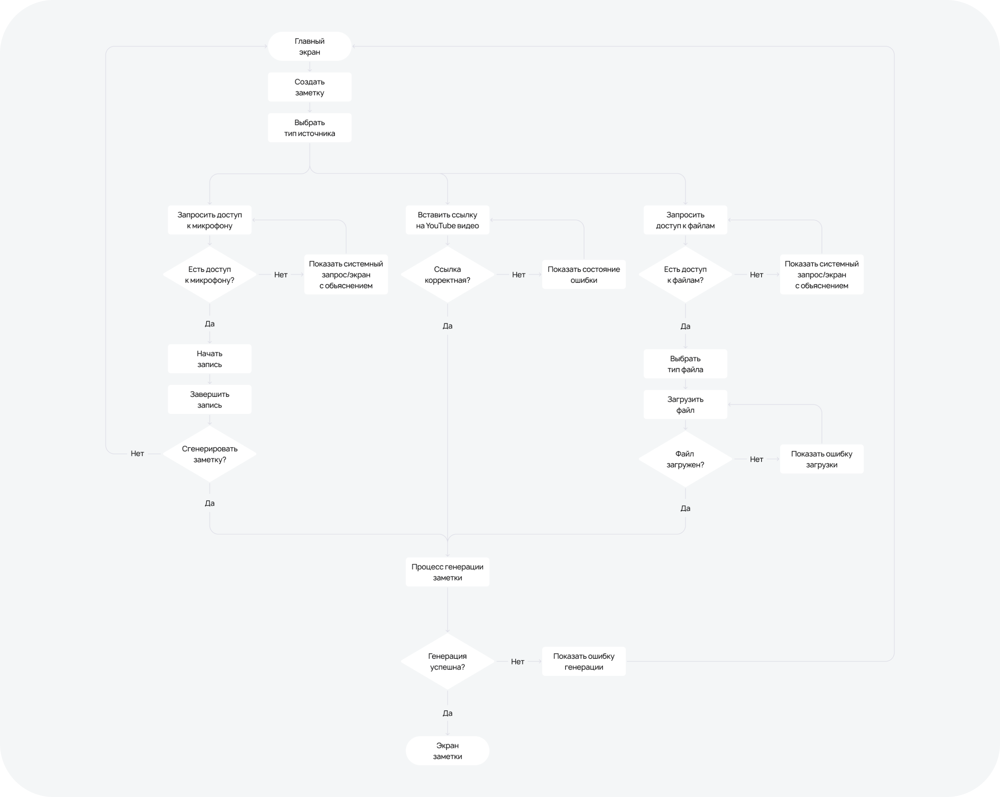
Позже этот сценарий расширился до записи рабочих встреч. В нём появились транскрипция в реальном времени, распознавание спикеров и статистика участия. Это сделало продукт полезнее для ИТ-работников.
Чтение заметки
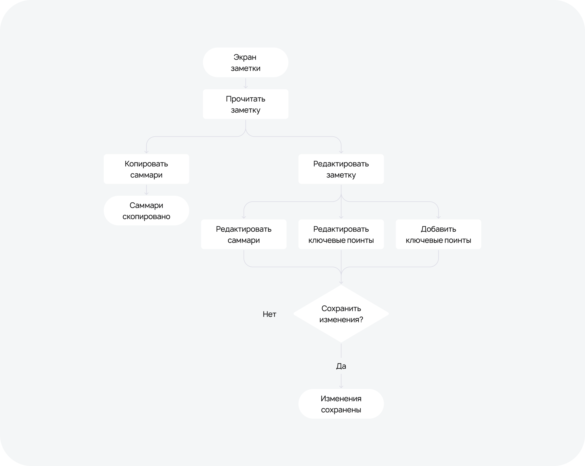
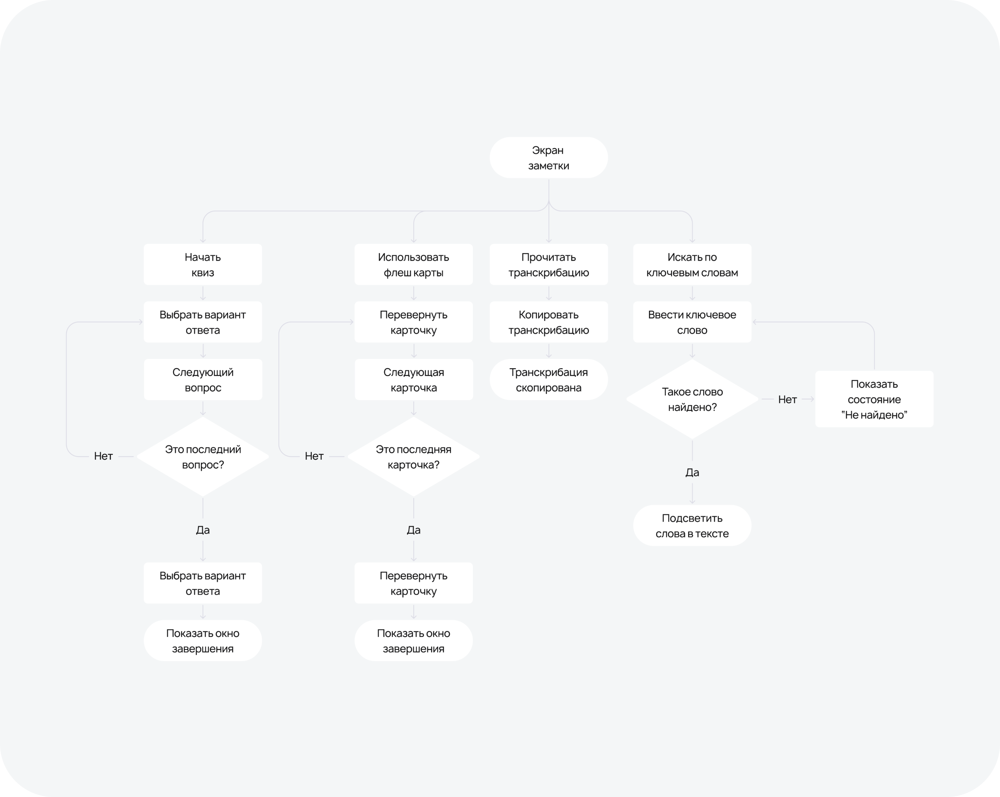
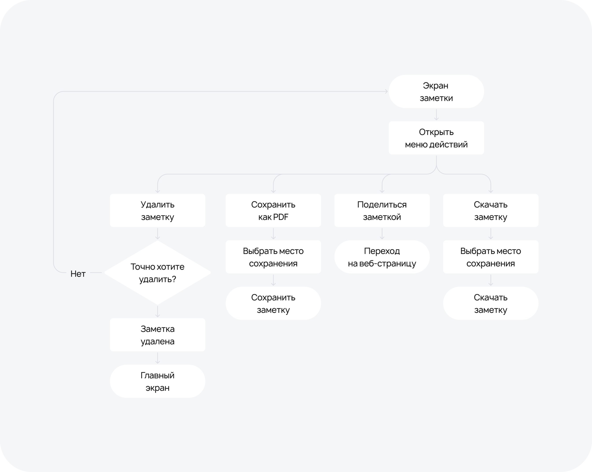
Структура заметки позволяет доносить информацию последовательно, уменьшая когнитивную нагрузку. Пользователь сначала видит краткий итог и ключевые поинты, а если нужно — может детально ознакомиться с информацией в транскрипте.
Дизайн-решения
Онбординг
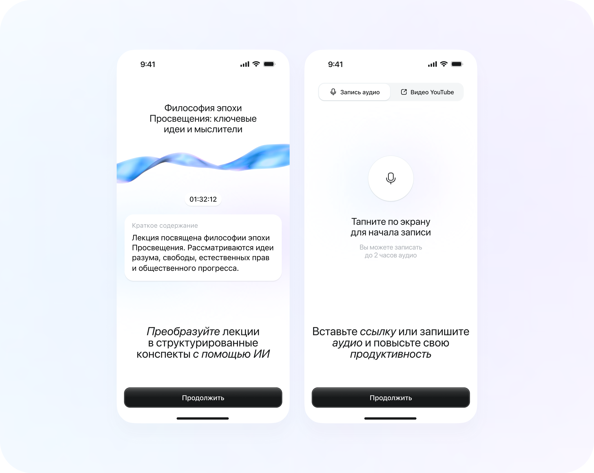
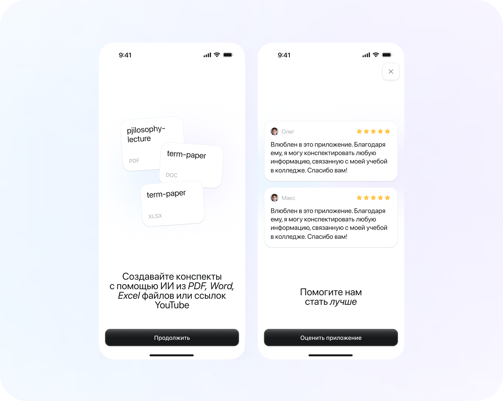
Онбординг должен быстро донести ценность — зачем нужен NoteOn и в каких ситуациях он помогает. В онбординге я показывал основные сценарии — запись конспекта из аудио, видео или файлов.
Здесь же есть экран с просьбой оценить приложение и положительным отзывом. Отзыв работал как социальное доказательство — перед пэйволлом пользователь видел подтверждение, что приложение уже приносит пользу другим людям.
Для повышения активации в онбординге пользователь может пройти ключевой сценарий — запись заметки.
Главный экран
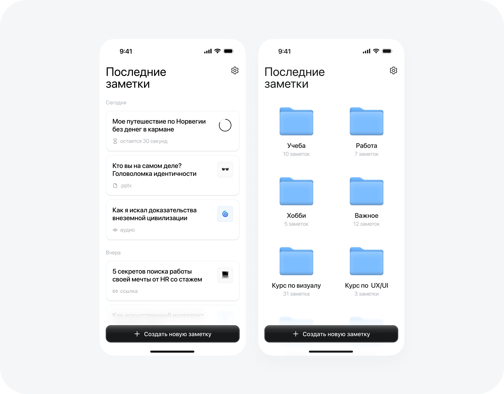
Главный экран сначала был максимально простым: список заметок и кнопка создания новой. На раннем этапе этого было достаточно, потому что главная задача MVP — проверить, создают ли пользователи заметки и возвращаются ли к ним.
Позже, когда стало понятно, что у активных пользователей растёт библиотека материалов, появилась возможность объединять заметки в папки.
Экран заметки
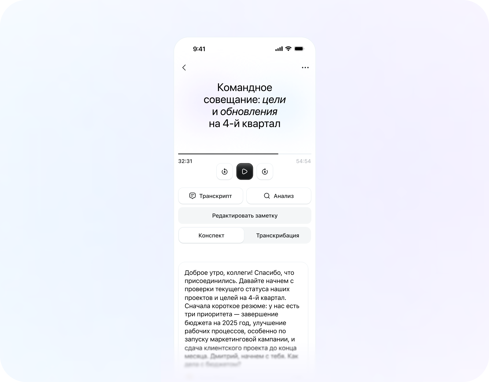
Экран заметки — центральный для продукта. Именно здесь пользователь должен получить основную ценность.
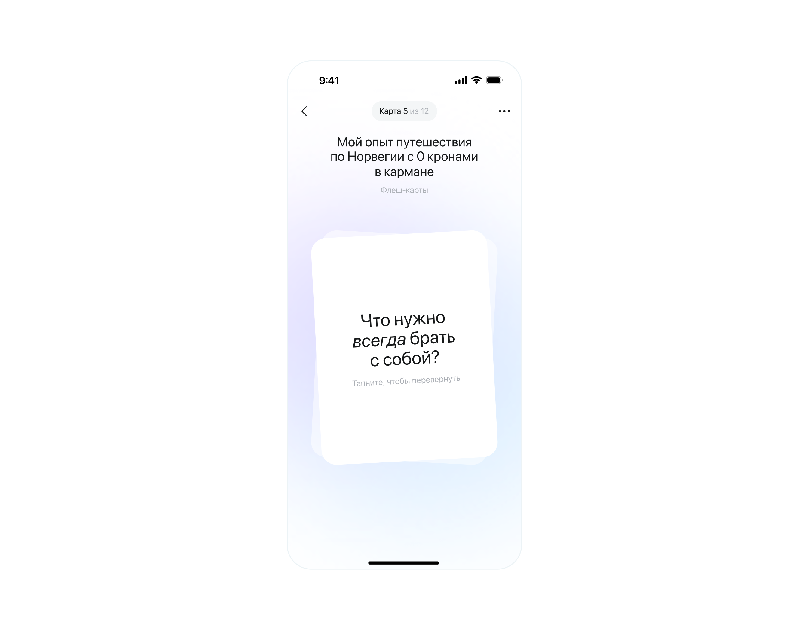
Заметка состоит из нескольких артефактов — краткое обобщение заметки, полная транскрипция, флеш-карты и викторина. Для рабочих встреч — функция анализа записи.
Такой дизайн решает несколько задач. Обобщение позволяет быстро получить главный смысл, транскрипция — проверить достоверность данных. Флеш-карты и квизы позволяют пользователю обучаться. Это делает заметку многократно используемой, из-за чего пользователь использует приложение регулярно. Функция «Поделиться» и экспорт в PDF дают возможность передачи и использования заметки вне приложения.
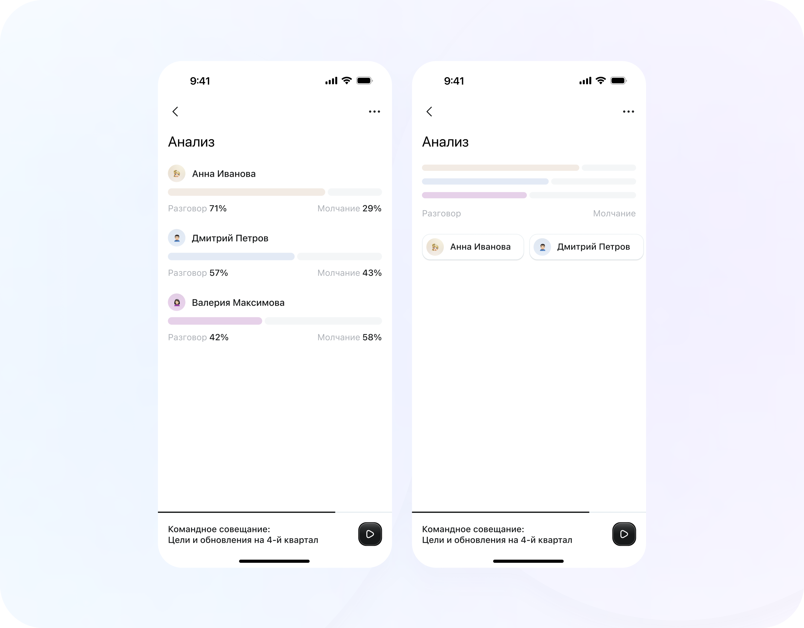
Paywall
В продукте было два основных сценария появления пэйволла:
- Пэйволл после онбординга
- Пэйволл при создании третьей по счёту заметки, так как первые две были бесплатными
Так мы проверяли две разные ситуации.
Первый пэйволл показывал, насколько ценность продукта понятна ещё до первого созданного конспекта. Второй появлялся после того, как пользователь уже попробовал приложение и получил ценность.
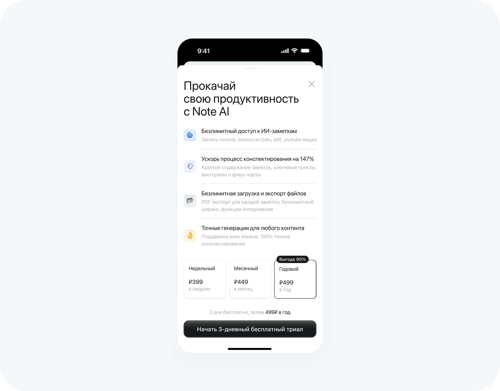
Развитие продукта по версиям
MVP
В первой версии мы сфокусировались на главной ценности.
В MVP вошли: создание заметки, хранение заметок, краткое обобщение, транскрипция, квизы и флеш-карты.
Главная гипотеза — если пользователь сможет быстро превратить объёмный материал в понятный краткий конспект, с которым можно работать через квизы и флеш-карты, он будет воспринимать NoteOn как инструмент экономии времени и будет позже возвращаться к заметке.
Заметки по рабочим встречам
Во второй версии мы усилили рабочий сценарий. В продукт добавилась функция записи рабочего собрания с транскрипцией в реальном времени, распознаванием участников и статистикой разговора — кто сколько молчал или участвовал в дискуссии.
Этот функционал появился из понимания, что для работников ИТ встречи — один из самых частых и болезненных сценариев. Во время созвона нужно слушать, участвовать, принимать решения и параллельно что-то фиксировать. NoteOn должен был снять с пользователя часть этой нагрузки.
Гипотеза — если приложение сможет автоматически фиксировать встречу и разделять речь по спикерам, пользователи будут воспринимать NoteOn не только как инструмент для личных заметок, но и как рабочий инструмент.
Поиск и шеринг
В третьей версии мы добавили функции, которые делают заметку более полезной при многократном использовании: поиск по ключевым словам внутри заметки и шеринг заметки отдельной веб-страницей. Страница повторяет лейаут заметки. Получатель открывает ссылку и видит заметку — ему не нужно устанавливать приложение или регистрироваться.
Когда заметкой можно поделиться в один тап, она становится полноценным артефактом для учёбы и работы.
Папки и PDF-экспорт
В четвёртой версии мы добавили организацию по папкам — возможность объединять несколько заметок в папку — и PDF-экспорт.
Папки появились только в четвёртой версии, потому что изначально было важнее проверить ценность отдельной заметки. Но когда пользователь создаёт всё больше материалов, простой список перестаёт быть удобным. Появляется потребность группировать заметки по разным темам, рабочим или учебным.
Экспорт в PDF закрыл другой сценарий — сохранить заметку для её использования вне приложения.
Гипотеза — когда пользователь может организовывать заметки и экспортировать их, NoteOn становится инструментом для работы с накопленной информацией.
Итог
В результате NoteOn сформировался как продукт для студентов, ИТ-работников и продуктивных людей.
Его задача — превратить объёмную информацию в формат, с которым удобно работать дальше. Инструмент позволяет получить конспект от ИИ, запомнить новую информацию с помощью викторин и флеш-карт и, если нужно, отправить заметку другому человеку или скачать себе на устройство.
Главный результат работы: из общей идеи «инструмент для создания заметок с помощью ИИ» продукт был сфокусирован вокруг конкретной пользовательской ценности — быстрого создания краткой заметки, пригодной для дальнейшего использования.